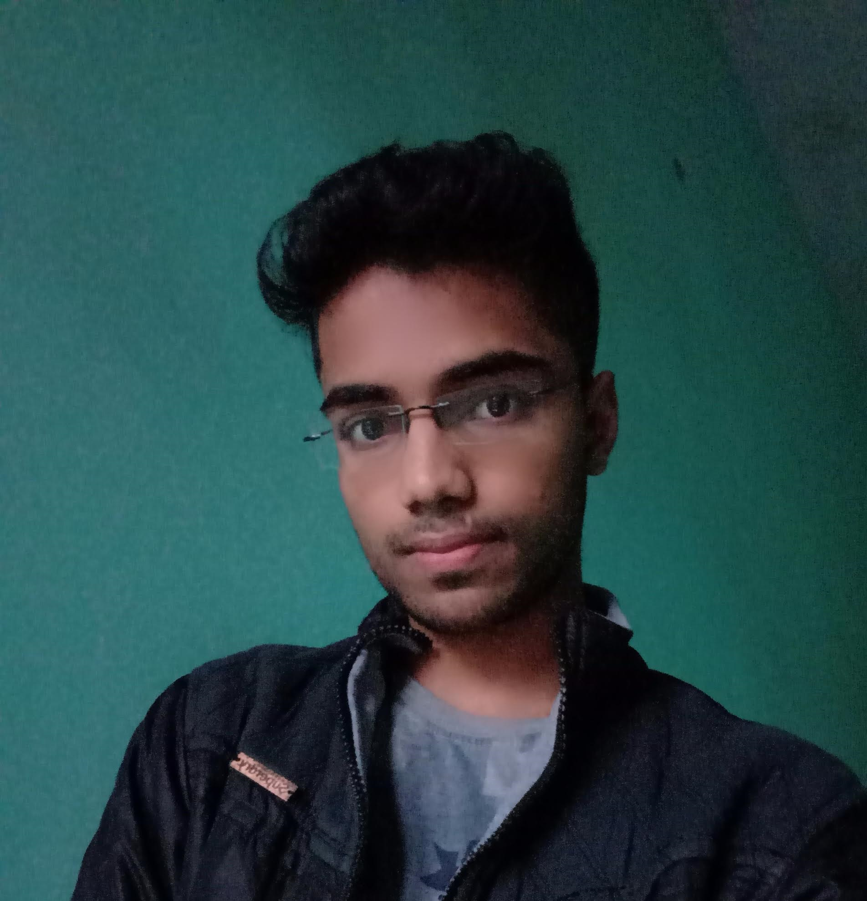

|  |
Ashutosh MishraA Computer Science Graduate, freelancer and a fullstack developer Email id:- ashutosh2135@gmail.com |
I am a little weird person and boring for others, but I am always fascinated by the way this world works like If there is water scarcity at some places on our planet and our science is so advanced and it knows that water can be composed by hydrogen and oxygen molecule then why they are not solving the issue and how much hydrogen and oxygen was consumed to make water as equivalent to antarctic ocean. And if we as human society is advancing in the world then why the suicide rate, drug consumption rate, crime rate are on increase even in countries like USA which is considered as hub of advancement. And if the problem continues to persist that means we are following a wrong approach and we must need to reconsider the way we approches to different things. I know it is not related to my qualification but this will give you a idea about the nature of mine and how I think and process the information.
| Date | Company |
|---|---|
| 2021 to 2022 | Chegg India Pvt Ltd |